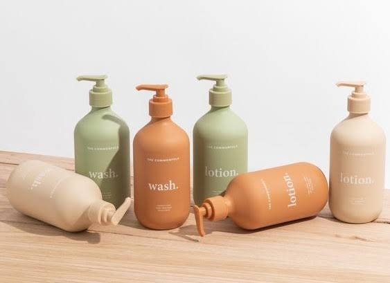

Sejarah
Perjalanan perusahaan, visi, dan misi.
Baca sejarahPT Urban Asia Industri adalah sebuah perusahaan manufaktur yang bergerak di bidang pembuatan dan maklon (OEM/ODM) kosmetik serta perawatan kulit. Berdiri sejak tahun 2021 dan berlokasi di Tabanan, Bali, perusahaan ini merupakan salah satu pabrik kosmetik terbesar di wilayah Indonesia Timur. Fasilitas pabriknya telah bersertifikasi ISO dan CPKB, serta menawarkan layanan lengkap mulai dari riset, desain produk, hingga pendaftaran izin BPOM dan sertifikat Halal.

PT. URBAN ASIA INDUSTRI adalah perusahaan manufaktur kosmetik dan kebutuhan kelengkapan rumah tangga yang bersertifikasi internasional. kami berdedikasi untuk memberikan produk berkualitas terbaik untuk seluruh pelanggan kami, dengan didukung oleh teknologi dan mesin berkualitas serta team ahli dibidangnya, kami menyediakan pelayanan ONE STOP SERVICE SOLUTION.
Perjalanan perusahaan, visi, dan misi.
Baca sejarahSusunan jabatan dan pembagian tugas dari direktur hingga operator.
Lihat strukturAlamat, peta, dan kontak perusahaan.
Buka petaFacial wash, toner, Moisturizer, Essence, dan Day/Night Cream.
Hand Soap, Massage Oil, Scrub, Sunscreen, Hand Cream dan Masker.
Essential Oil, Eau de Parfum, Eau de Toilette, dan Ekstrak Parfum.